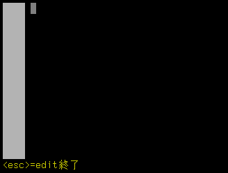

計算式を１つずつ実行しているのでは、電卓を叩いているのと大して変わりません。コンピュータを使う面白さの一つは、くり返し動作が自動的にできることです。やってみましょう。まず、いつもの入力待ちの状態で、edit と打って ENTER を押します。大文字でもかまいません。次のような画面になります。

これは編集画面です。ごく簡単な編集しかできませんが、ともかくプログラムを書くことができます。次のように入力してください。一番左の数字は行番号で、入力する必要はありません。また、行を変えるときは ENTER を押します。普通の入力待ちの時とは違って、編集中は ENTER を押しても命令文として実行されることはなく、単に行が変わります。
1 FOR I=0 TO 10
2 PRINT I,I*5
3 NEXT
入力できたら、ESC キーを押してください。いつもの入力待ちの状態 (>> が表示されている状態）に戻ります。ここで run と打って ENTER を押すと、プログラムが実行されます。
>> RUN
0 0
1 5
2 10
3 15
4 20
5 25
プログラムを説明しましょう。FOR 文は、ある決まった回数のくり返しを行います。
変数 に式1の値を入れる。変数 の値が 式2 よりも大きくなければ、「くり返す内容」を実行する。変数 の値を 式3 だけ変化させて、2 に戻る。STEP 式3 が省略された場合は、1 だけ変化させる。式3 が負の値の場合は、2. の「大きくなければ」が「小さくなければ」になる。）
上の例では、式1 が 0, 式2 が 5 で、STEP 式3 は省略されています。そこで、変数 I に最初に 0 が入って、1 ずつ増やして 5 より大きくなるまで、PRINT I,I*5 がくり返し実行されるわけです。
STEP 0 を指定すると、無限ループになってしまいます。この場合は、control(ctrl)キーと C キーを同時に押す（ctrl-C）と実行を止めることができます。
1 FOR I=0 TO 0 STEP 0
2 NEXT
>> RUN
（ctrl-C を押す）
ユーザー割り込みが起きました
>>
[ ← トップページへ ]
[ ダウンロードページへ → ]